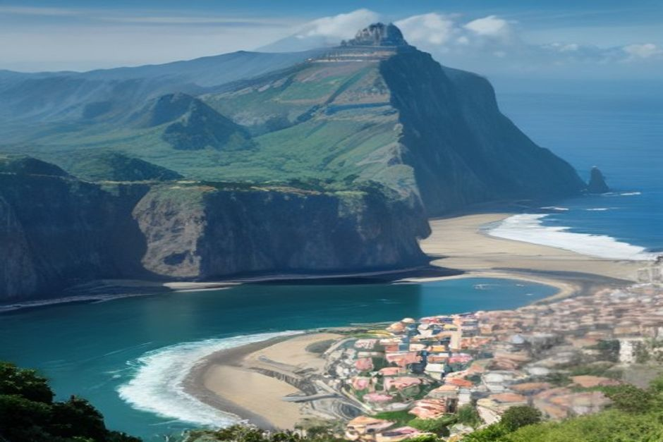

Madeira, wie viele Tage? Die kurze Antwort: Für einen ersten Besuch sind vier bis fünf Tage ein guter Rahmen, eine Woche ist die entspannte Variante. Warum das so ist und was Sie in welcher Zeit machen können, lesen Sie hier.
Viele rechnen mit einer Badeinsel, die sich an einem verlängerten Wochenende abhaken lässt. Madeira ist etwas anderes: ein Gebirge, das mitten im Atlantik steht. Berge, Küste und Wetter bestimmen den Takt, nicht der Strand. Deshalb hängt die Frage "wie lange auf Madeira bleiben" weniger von der Insel ab als davon, was Sie sehen möchten.
Die Antwort in Kürze: Tage und was dazu passt
- 2 Tage: ein Ausschnitt. Funchal und ein Ausflug, mehr nicht.
- 3 Tage: ein Vorgeschmack. Machbar, aber Sie müssen auswählen.
- 4 bis 5 Tage: der Rahmen für einen ersten Besuch, mit Stadt, Berg und Wasser.
- 7 Tage: die komfortable Variante, mit Nordküste und Reserve für schlechtes Wetter.
- Mehr als 7 Tage: Zeit für ein Tempo, das Madeira ohnehin belohnt.
Wer weniger als drei Tage hat, sollte eine Region wählen und akzeptieren, dass er einen Ausschnitt sieht und nicht die ganze Insel.

Drei Tage auf Madeira: Was machen, wenn die Zeit knapp ist?
Drei Tage reichen für einen Vorgeschmack. Der ehrliche Plan sieht so aus:
- Tag 1, Funchal: Zona Velha, Mercado dos Lavradores und eine Fahrt mit der Seilbahn hinauf nach Monte.
- Tag 2, Küste: Câmara de Lobos, Cabo Girão und ein Badestopp.
- Tag 3, Berge: eine Wanderung oder eine Levada.
Der Küstentag ist der, an dem sich ein Boot am meisten lohnt. An Land brauchen Sie für diese Stationen einen ganzen Tag mit Fahren und Parkplatzsuche. Auf dem Wasser lassen sie sich an einem Nachmittag verbinden. Mehr dazu weiter unten.
Vier bis fünf Tage: der gute Rahmen für den ersten Besuch
Wenn Sie fragen, wie viele Tage für Madeira nötig sind, damit sich die Reise rund anfühlt, lautet unsere Antwort: fünf. Ein möglicher Ablauf:
- Tag 1: sanft ankommen, Funchal zu Fuß.
- Tag 2: ein voller Tag an der Südküste per Boot.
- Tag 3: Wandern, zum Beispiel am Pico do Arieiro oder auf der Levada 25 Fontes.
- Tag 4: ein Dorf an Land, etwa Ribeira Brava oder Ponta do Sol.
- Tag 5: der Reservetag.
Dieser fünfte Tag ist kein Luxus. Er ist wichtiger als jede feste Reihenfolge, denn das Wetter kann auf Madeira einen Bergtag mit wenigen Stunden Vorlauf in einen Küstentag verwandeln. Wer einen freien Tag hat, tauscht einfach.
Eine Woche: Was Sie auf Madeira machen können
Sieben Tage decken fast alles ab, was die meisten Gäste wirklich sehen wollen. Gemeint ist: Funchal, die Südküste per Boot, mindestens zwei Wandertage (einen im Hochgebirge, einen auf einer tieferen Levada), ein ganzer Tag an der wilderen Nordküste um Porto Moniz und Seixal und gegen Ende eine Sonnenuntergangsfahrt.
Was auch eine Woche nicht hergibt, ist alles in entspanntem Tempo. Wer Nordküste, Desertas-Inseln und Pico Ruivo in dieselbe Woche packt, sitzt am Ende mehr im Auto, als ihm lieb ist. Madeira belohnt langsames Reisen.
Wie lange auf Madeira bleiben: Was Ihnen wichtiger ist, entscheidet
Statt nur auf die Zahl zu schauen, fragen Sie sich, was Ihr Urlaub sein soll:
- Wandern ist der Hauptgrund: planen Sie mindestens fünf bis sieben Tage ein. Die Wege liegen weit auseinander, und die Wetterreserve zählt doppelt.
- Stadt, Küste und gutes Essen: vier Tage in Funchal und Umgebung genügen.
- Erholung ohne Programm: hier kann eine Woche sehr gut passen, mit höchstens einem Ausflug am Tag.
Es gibt keine falsche Aufenthaltsdauer, nur ein Missverhältnis zwischen gebuchten Tagen und dem Wunsch, möglichst viel zu sehen. Wählen Sie die Region, die Sie am meisten reizt, und heben Sie den Rest für das nächste Mal auf. Die meisten, die einmal da waren, kommen ohnehin wieder.
Funchal als Basis oder zwei Unterkünfte?
Bei weniger als einer Woche bleiben Sie am besten in Funchal. Die Stadt liegt zentral genug, dass jede wichtige Sehenswürdigkeit, die Berge, die Dörfer der Südküste und der Flughafen, innerhalb etwa einer Autostunde liegt. Eine zweite Unterkunft kostet bei kurzen Reisen mit Packen und Check-out meist mehr Zeit, als sie spart.
Ab sieben Tagen kann sich eine Nacht oder zwei in Porto Moniz oder Santana lohnen, allein um nach einem langen Nordküstentag nicht den ganzen Weg zurückfahren zu müssen.
Brauchen Sie einen Mietwagen?
Ab fünf Tagen ja, wenn Sie wandern und die Nordküste sehen wollen. Die meisten Levada-Ausgangspunkte, der Pico do Arieiro und die ganze Nordküste sind mit dem Bus kaum in einem Zeitplan erreichbar, der zu einem kurzen Urlaub passt.
Für drei Tage mit Funchal und der Südküste können Sie darauf verzichten. Taxis, Bolt und ein privates Boot decken die Höhepunkte ab, ohne Mietkosten, Selbstbeteiligung bei der Versicherung und die Nerven, die Bergstraßen kosten können. Weitere Hinweise zur Anreise und Organisation finden Sie bei den praktischen Infos.
Wann gehört der Bootstag in den Reiseplan?
Früh in der Reise, an dem Tag mit dem ruhigsten Wind laut Vorhersage. Am ersten oder zweiten Tag zeigt Ihnen das Boot die Küste von Câmara de Lobos bis Cabo Girão und darüber hinaus. So erkennen Sie, welche Dörfer später einen langsameren Besuch an Land verdienen. Außerdem bleibt ein Puffer: Wird der Termin wegen des Wetters verschoben, bleiben noch Tage, um ihn vor dem Rückflug nachzuholen.
Bei Chifbay fahren Sie ohne andere Gäste. Das ganze Boot gehört Ihrer Gruppe, bis zu 5 Personen, mit zwei lizenzierten Skippern aus Madeira. Treffpunkt ist die Marina do Funchal, Steg C. Die Preise gelten immer für das ganze Boot, nicht pro Person.
- Tagestour (Abfahrt 10:00 oder 14:00): 2 Std. 30 bis Ribeira Brava für 500 €, oder 3 Std. weiter bis Ponta do Sol für 600 €. Mit Câmara de Lobos, Cabo Girão, Badestopp und Paddleboards an der Fajã dos Padres. Mehr dazu bei der Tagestour.
- Sonnenuntergangsfahrt: Abfahrt 1 Std. 15 vor Sonnenuntergang, das ganze Jahr. 2 Std. bis Cabo Girão für 400 € oder 2 Std. 30 bis Ribeira Brava für 500 €, ohne Badestopp.
Essen und Getränke an Bord, ein 360-Grad-Video mit der Insta360, Drohnenaufnahmen (wenn das Wetter es erlaubt) und Fotos mit einer richtigen Kamera sind bei jeder Fahrt inbegriffen. Bis 24 Stunden vor Abfahrt stornieren Sie kostenlos, das hilft, wenn der Wetterbericht Ihren Plan ändert. Delfine, Wale, schönes Licht und gutes Wetter versprechen wir nicht: Sie sind ein Geschenk, wenn sie vorkommen. Einen Überblick über alle Fahrten bietet die Seite Bootstouren auf Madeira, und alle Angebote finden Sie unter Erlebnisse.
Wetter und Planung: Warum eine Reserve zählt
Das Wetter Madeiras ist je nach Höhe und Küstenseite sehr verschieden. Was unten in Funchal klar aussieht, kann oben am Berg in Wolken liegen. Planen Sie darum nicht jeden Tag fest durch. Legen Sie die Wanderung auf den Tag, an dem die Vorhersage für die Berge am besten ist, und den Bootstag auf den Tag mit ruhigem Wind. Je länger Ihr Aufenthalt, desto leichter lässt sich beides verschieben.
Unsere Empfehlung
Wenn Sie nur einen Satz mitnehmen: Planen Sie fünf Tage, wenn es geht, und halten Sie einen davon frei. Haben Sie nur drei Tage, nehmen Sie Funchal, einen Küstentag per Boot und einen Berg- oder Levada-Tag, und seien Sie nachsichtig mit sich selbst, dass nicht alles hineinpasst. Mit sieben Tagen und mehr haben Sie Zeit für die Nordküste und ein Tempo, das zu Madeira passt.
Lesen Sie auch unser Journal und die Bewertungen unserer Gäste.